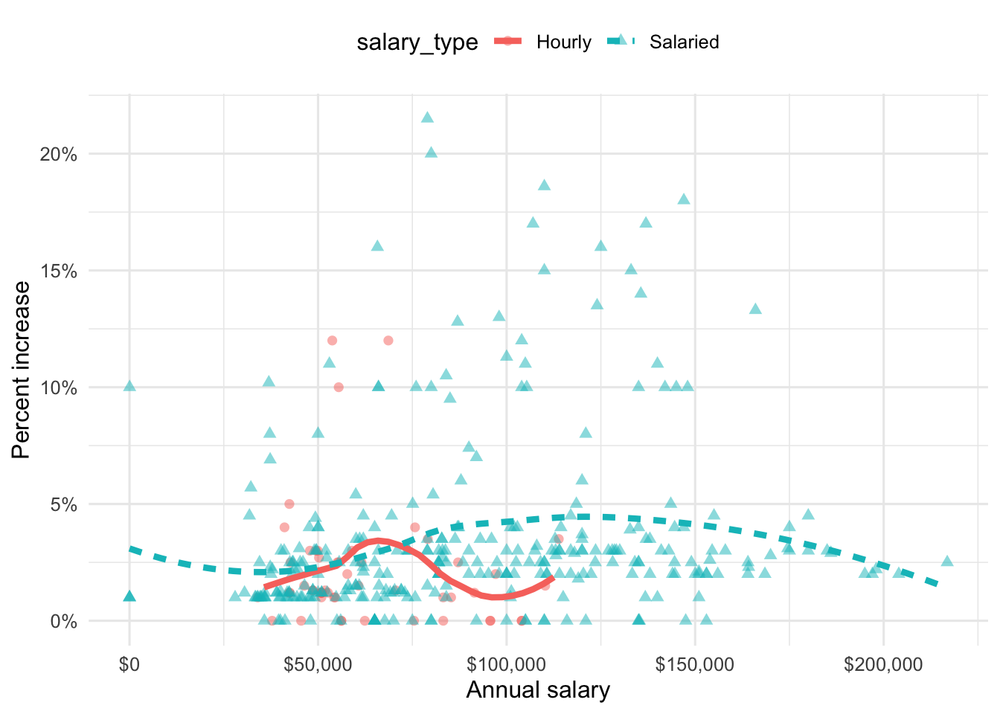
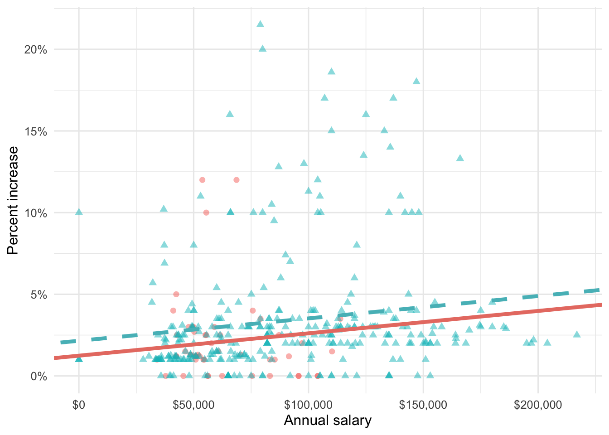
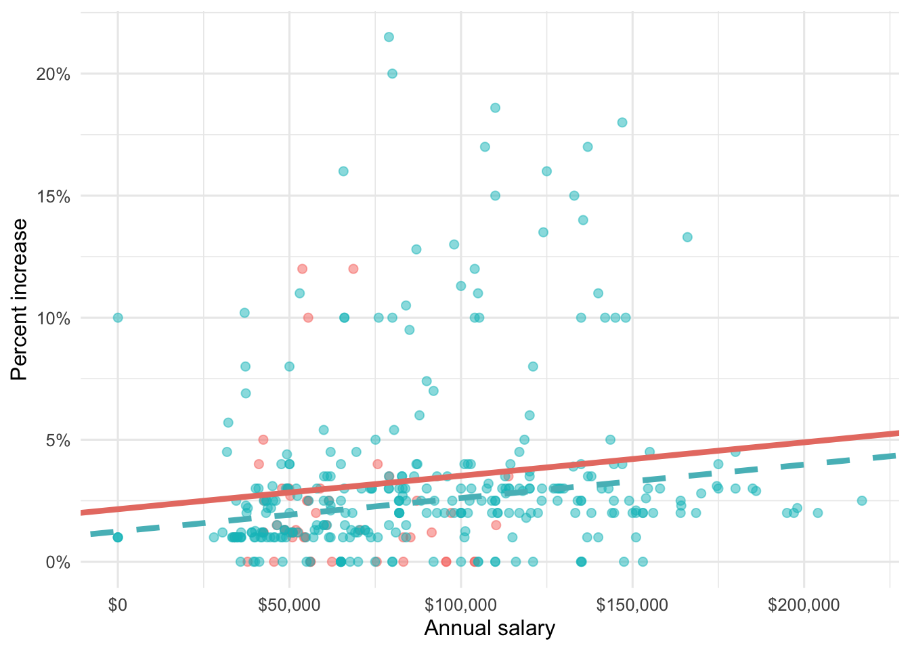
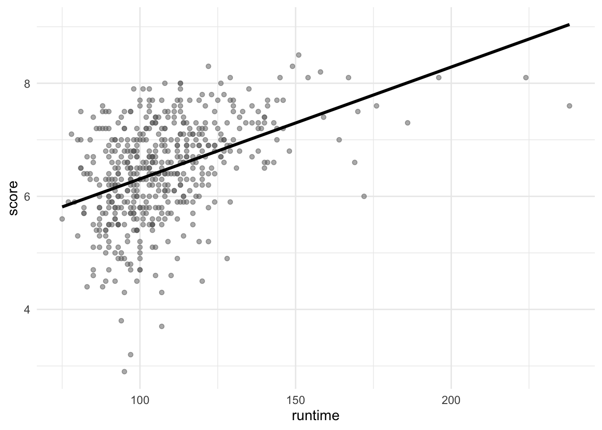
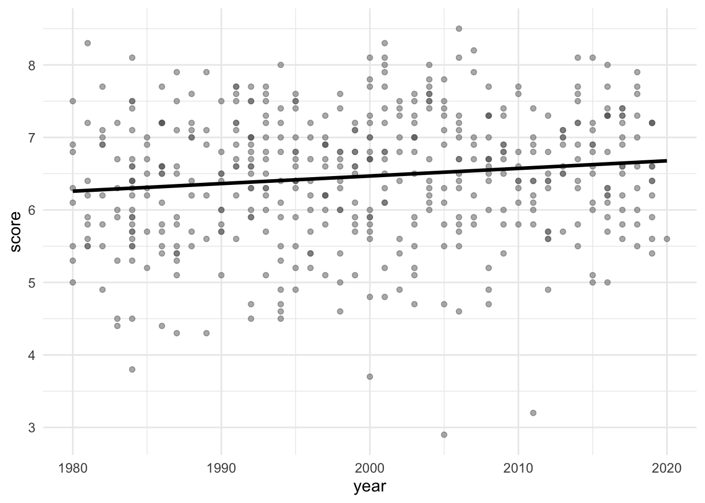

# A tibble: 409 × 4
percent_incr salary_type annual_salary performance_rating
<dbl> <chr> <dbl> <chr>
1 1 Salaried 1 High
2 1 Salaried 1 Successful
3 1 Salaried 1 High
4 1 Hourly 33987. Successful
5 NA Hourly 34798. High
6 NA Hourly 35360 <NA>
7 NA Hourly 37440 <NA>
8 0 Hourly 37814. <NA>
9 4 Hourly 41101. Top
10 1.2 Hourly 42328 <NA>
# ℹ 399 more rowsMidterm 2 Practice Questions
Solutions
See here.
Part 1 - Blizzard
In 2020, employees of Blizzard Entertainment circulated a spreadsheet to anonymously share salaries and recent pay increases amidst rising tension in the video game industry over wage disparities and executive compensation. (Source: Blizzard Workers Share Salaries in Revolt Over Pay)
The name of the data frame used for this analysis is blizzard_salary and the variables are:
percent_incr: Raise given in July 2020, as percent increase with values ranging from 1 (1% increase to 21.5 (21.5% increase)salary_type: Type of salary, with levelsHourlyandSalariedannual_salary: Annual salary, in USD, with values ranging from $50,939 to $216,856.performance_rating: Most recent review performance rating, with levelsPoor,Successful,High, andTop. ThePoorlevel is the lowest rating and theToplevel is the highest rating.
The top ten rows of blizzard_salary are shown below:
Question 1
You fit a model for predicting raises (percent_incr) from salaries (annual_salary). We’ll call this model raise_1_fit. A tidy output of the model is shown below.
# A tibble: 2 × 5
term estimate std.error statistic p.value
<chr> <dbl> <dbl> <dbl> <dbl>
1 (Intercept) 1.87 0.432 4.33 0.0000194
2 annual_salary 0.0000155 0.00000452 3.43 0.000669 Which of the following is the best interpretation of the slope coefficient?
- For every additional $1,000 of annual salary, the model predicts the raise to be higher, on average, by 1.55%.
- For every additional $1,000 of annual salary, the raise goes up by 0.0155%.
- For every additional $1,000 of annual salary, the model predicts the raise to be higher, on average, by 0.0155%.
- For every additional $1,000 of annual salary, the model predicts the raise to be higher, on average, by 1.87%.
Question 2
You then fit a model for predicting raises (percent_incr) from salaries (annual_salary) and performance ratings (performance_rating). We’ll call this model raise_2_fit. Which of the following is definitely true based on the information you have so far?
- Intercept of
raise_2_fitis higher than intercept ofraise_1_fit. - Slope of
raise_2_fitis higher than RMSE ofraise_1_fit. - Adjusted \(R^2\) of
raise_2_fitis higher than adjusted \(R^2\) ofraise_1_fit. -
\(R^2\) of
raise_2_fitis higher \(R^2\) ofraise_1_fit.
Question 3
The tidy model output for the raise_2_fit model you fit is shown below.
# A tibble: 5 × 5
term estimate std.error statistic p.value
<chr> <dbl> <dbl> <dbl> <dbl>
1 (Intercept) 3.55 0.508 6.99 1.99e-11
2 annual_salary 0.00000989 0.00000436 2.27 2.42e- 2
3 performance_ratingPoor -4.06 1.42 -2.86 4.58e- 3
4 performance_ratingSuccessful -2.40 0.397 -6.05 4.68e- 9
5 performance_ratingTop 2.99 0.715 4.18 3.92e- 5When your teammate sees this model output, they remark “The coefficient for performance_ratingSuccessful is negative, that’s weird. I guess it means that people who get successful performance ratings get lower raises.” How would you respond to your teammate?
Question 4
Ultimately, your teammate decides they don’t like the negative slope coefficients in the model output you created (not that there’s anything wrong with negative slope coefficients!), does something else, and comes up with the following model output.
# A tibble: 5 × 5
term estimate std.error statistic p.value
<chr> <dbl> <dbl> <dbl> <dbl>
1 (Intercept) -0.511 1.47 -0.347 0.729
2 annual_salary 0.00000989 0.00000436 2.27 0.0242
3 performance_ratingSuccessful 1.66 1.42 1.17 0.242
4 performance_ratingHigh 4.06 1.42 2.86 0.00458
5 performance_ratingTop 7.05 1.53 4.60 0.00000644Unfortunately they didn’t write their code in a Quarto document, instead just wrote some code in the Console and then lost track of their work. They remember using the fct_relevel() function and doing something like the following:
blizzard_salary <- blizzard_salary |>
mutate(performance_rating = fct_relevel(performance_rating, ___))What should they put in the blanks to get the same model output as above?
- “Poor”, “Successful”, “High”, “Top”
- “Successful”, “High”, “Top”
- “Top”, “High”, “Successful”, “Poor”
- Poor, Successful, High, Top
Question 5
Suppose we fit a model to predict percent_incr from annual_salary and salary_type. A tidy output of the model is shown below.
# A tibble: 3 × 5
term estimate std.error statistic p.value
<chr> <dbl> <dbl> <dbl> <dbl>
1 (Intercept) 1.24 0.570 2.18 0.0300
2 annual_salary 0.0000137 0.00000464 2.96 0.00329
3 salary_typeSalaried 0.913 0.544 1.68 0.0938 Which of the following visualizations represent this model? Explain your reasoning.




Question 6
Suppose you now fit a model to predict the natural log of percent increase, log(percent_incr), from performance rating. The model is called raise_4_fit.
You’re provided the following:
tidy(raise_4_fit) |>
select(term, estimate) |>
mutate(exp_estimate = exp(estimate))# A tibble: 4 × 3
term estimate exp_estimate
<chr> <dbl> <dbl>
1 (Intercept) -7.15 0.000786
2 performance_ratingSuccessful 6.93 1025.
3 performance_ratingHigh 8.17 3534.
4 performance_ratingTop 8.91 7438. Based on this, which of the following is true?
a. The model predicts that the percentage increase employees with Successful performance get, on average, is higher by 10.25% compared to the employees with Poor performance rating.
b. The model predicts that the percentage increase employees with Successful performance get, on average, is higher by 6.93% compared to the employees with Poor performance rating.
c. The model predicts that the percentage increase employees with Successful performance get, on average, is higher by a factor of 1025 compared to the employees with Poor performance rating.
d. The model predicts that the percentage increase employees with Successful performance get, on average, is higher by a factor of 6.93 compared to the employees with Poor performance rating.
Part 2 - Movies
The data for this part comes from the Internet Movie Database (IMDB). Specifically, the data are a random sample of movies released between 1980 and 2020.
The name of the data frame used for this analysis is movies, and it contains the variables shown in Table 1.
movies
| Variable | Description |
|---|---|
name |
name of the movie |
rating |
rating of the movie (R, PG, etc.) |
genre |
main genre of the movie. |
runtime |
duration of the movie |
year |
year of release |
release_date |
release date (YYYY-MM-DD) |
release_country |
release country |
score |
IMDB user rating |
votes |
number of user votes |
director |
the director |
writer |
writer of the movie |
star |
main actor/actress |
country |
country of origin |
budget |
the budget of a movie (some movies don’t have this, so it appears as 0) |
gross |
revenue of the movie |
company |
the production company |
The first thirty rows of the movies data frame are shown in ?@tbl-data, with variable types suppressed (since we’ll ask about them later).
Part 2a - Score vs. runtime
In this part, we fit a model predicting score from runtime and name it score_runtime_fit.
score_runtime_fit <- linear_reg() |>
fit(score ~ runtime, data = movies)Figure 2 visualizes the relationship between score and runtime as well as the linear model for predicting score from runtime. The top three movies in ?@tbl-data are labeled in the visualization as well. Answer all questions in this part based on Figure 2.

score vs. runtime for movies.
Question 7
Partial code for producing Figure 2 is given below. Which of the following goes in the blank on Line 2? Select all that apply.
grepl(" mins", runtime)grep(" mins", runtime)str_remove(runtime, " mins")as.numeric(str_remove(runtime, " mins"))na.rm(runtime)
Question 8
Based on this model, order the three labeled movies in Figure 2 in decreasing order of the magnitude (absolute value) of their residuals.
Winter Sleep> Rang De Basanti > Blue City
Winter Sleep> Blue City > Rang De Basanti
Rang De Basanti > Winter Sleep> Blue City
Blue City > Winter Sleep > Rang De Basanti
Blue City > Rang De Basanti > Winter Sleep
Question 9
The R-squared for the model visualized in Figure 2 is 31%. Which of the following is the best interpretation of this value?
31% of the variability in movie runtimes is explained by their scores.
31% of the variability in movie scores is explained by their runtime.
The model accurately predicts scores of 31% of the movies in this sample.
The model accurately predicts scores of 31% of all movies.
The correlation between scores and runtimes of movies is 0.31.
Part 2b - Score vs. runtime or year
The visualizations below show the relationship between score and runtime as well as score and year, respectively. Additionally, the lines of best fit are overlaid on the visualizations.


The correlation coefficients of these relationships are calculated below, though some of the code and the output are missing. Answer all questions in this part based on the code and output shown below.
movies |>
__blank_1__(
r_score_runtime = cor(runtime, score),
r_score_year = cor(year, score)
)# A tibble: 1 × 2
r_score_runtime r_score_year
<dbl> <dbl>
1 0.434. __blank_2__ Question 10
Which of the following goes in __blank_1__?
summarizemutategroup_byarrangefilter
Question 11
What can we say about the value that goes in __blank_2__?
NAA value between 0 and 0.434.
A value between 0.434 and 1.
A value between 0 and -0.434.
A value between -1 and -0.434.
Part 2c - Score vs. runtime and rating
In this part, we fit a model predicting score from runtime and rating (categorized as G, PG, PG-13, R, NC-17, and Not Rated), and name it score_runtime_rating_fit.
The model output for score_runtime_rating_fit is shown in Table 2. Answer all questions in this part based on Table 2.
score_runtime_rating_fit.
| term | estimate | std.error | statistic | p.value |
|---|---|---|---|---|
| (Intercept) | 4.525 | 0.332 | 13.647 | 0.000 |
| runtime | 0.021 | 0.002 | 10.702 | 0.000 |
| ratingPG | -0.189 | 0.295 | -0.642 | 0.521 |
| ratingPG-13 | -0.452 | 0.292 | -1.547 | 0.123 |
| ratingR | -0.257 | 0.285 | -0.901 | 0.368 |
| ratingNC-17 | -0.355 | 0.486 | -0.730 | 0.466 |
| ratingNot Rated | -0.282 | 0.328 | -0.860 | 0.390 |
Question 12
Which of the following is TRUE about the intercept of score_runtime_rating_fit? Select all that are true.
Keeping runtime constant, G-rated movies are predicted to score, on average, 4.525 points.
Keeping runtime constant, movies without a rating are predicted to score, on average, 4.525 points.
Movies without a rating that are 0 minutes in length are predicted to score, on average, 4.525 points.
All else held constant, movies that are 0 minutes in length are predicted to score, on average, 4.525 points.
G-rated movies that are 0 minutes in length are predicted to score, on average, 4.525 points.
Question 13
Which of the following is the best interpretation of the slope of runtime in score_runtime_rating_fit?
All else held constant, as runtime increases by 1 minute, the score of the movie increases by 0.021 points.
For G-rated movies, all else held constant, as runtime increases by 1 minute, the score of the movie increases by 0.021 points.
All else held constant, for each additional minute of runtime, movie scores will be higher by 0.021 points on average.
G-rated movies that are 0 minutes in length are predicted to score 0.021 points on average.
For each higher level of rating, the movie scores go up by 0.021 points on average.
Question 14
Fill in the blank:
R-squared for
score_runtime_rating_fit(the model predictingscorefromruntimeandrating) _________ the R-squared the modelscore_runtime_fit(for predictingscorefromruntimealone).
is less than
is equal to
is greater than
cannot be compared (based on the information provided) to
is both greater than and less than
Question 15
The model score_runtime_rating_fit (the model predicting score from runtime and rating) can be visualized as parallel lines for each level of rating. Which of the following is the equation of the line for R-rated movies?
\(\widehat{score} = (4.525 - 0.257) + 0.021 \times runtime\)
\(score = (4.525 - 0.257) + 0.021 \times runtime\)
\(\widehat{score} = 4.525 + (0.021 - 0.257) \times runtime\)
\(score = 4.525 + (0.021 - 0.257) \times runtime\)
\(\widehat{score} = (4.525 + 0.021) - 0.257 \times runtime\)
Part 3 - Miscellaneous
Question 16
Which of the following is the definition of a regression model? Select all that apply.
a. \(\hat{y} = b_0 + b_1 X_1\)
b. \(y = \beta_0 + \beta_1 X_1\)
c. \(\hat{y} = \beta_0 + \beta_1 X_1 + \epsilon\)
d. \(y = \beta_0 + \beta_1 X_1 + \epsilon\)
Question 17
Choose the best answer.
A survey based on a random sample of 2,045 American teenagers found that a 95% confidence interval for the mean number of texts sent per month was (1450, 1550). A valid interpretation of this interval is
- 95% of all teens who text send between 1450 and 1550 text messages per month.
- If a new survey with the same sample size were to be taken, there is a 95% chance that the mean number of texts in the sample would be between 1450 and 1550.
- We are 95% confident that the mean number of texts per month of all American teens is between 1450 and 1550.
- We are 95% confident that, were we to repeat this survey, the mean number of texts per month of those taking part in the survey would be between 1450 and 1550.
Question 18
Define the term “parsimonious model”.
Part 4 - Building a spam filter
The data come from incoming emails in David Diez’s (one of the authors of OpenIntro textbooks) Gmail account for the first three months of 2012. All personally identifiable information has been removed. The dataset is called email and it’s in the openintro package.
The outcome variable is spam, which takes the value 1 if the email is spam, 0 otherwise.
Question 19
What type of variable is
spam? What percent of the emails are spam?What type of variable is
dollar- number of times a dollar sign or the word “dollar” appeared in the email? Visualize and describe its distribution, supporting your description with the appropriate summary statistics.Fit a logistic regression model predicting
spamfromdollar. Then, display the tidy output of the model.-
Using this model and the
predict()function, predict the probability the email is spam if it contains 5 dollar signs. Based on this probability, how does the model classify this email?NoteTo obtain the predicted probability, you can set the
typeargument inpredict()to"prob".
Question 20
Fit another logistic regression model predicting
spamfromdollar,winner(indicating whether “winner” appeared in the email), andurgent_subj(whether the word “urgent” is in the subject of the email). Then, display the tidy output of the model.Using this model and the
augment()function, classify each email in theemaildataset as spam or not spam. Store the resulting data frame with an appropriate name and display the data frame as well.-
Using your data frame from the previous part, determine, in a single pipeline, and using
count(), the numbers of emails:- that are labelled as spam that are actually spam
- that are not labelled as spam that are actually spam
- that are labelled as spam that are actually not spam
- that are not labelled as spam that are actually not spam
Store the resulting data frame with an appropriate name and display the data frame as well.
In a single pipeline, and using
mutate(), calculate the false positive and false negative rates. In addition to these numbers showing in your R output, you must write a sentence that explicitly states and identified the two rates.
Question 21
Fit another logistic regression model predicting
spamfromdollarand another variable you think would be a good predictor. Provide a 1-sentence justification for why you chose this variable. Display the tidy output of the model.Using this model and the
augment()function, classify each email in theemaildataset as spam or not spam. Store the resulting data frame with an appropriate name and display the data frame as well.-
Using your data frame from the previous part, determine, in a single pipeline, and using
count(), the numbers of emails:- that are labelled as spam that are actually spam
- that are not labelled as spam that are actually spam
- that are labelled as spam that are actually not spam
- that are not labelled as spam that are actually not spam
Store the resulting data frame with an appropriate name and display the data frame as well.
In a single pipeline, and using
mutate(), calculate the false positive and false negative rates. In addition to these numbers showing in your R output, you must write a sentence that explicitly states and identified the two rates.Based on the false positive and false negatives rates of this model, comment, in 1-2 sentences, on which model (one from Question 20 or Question 21) is preferable and why.